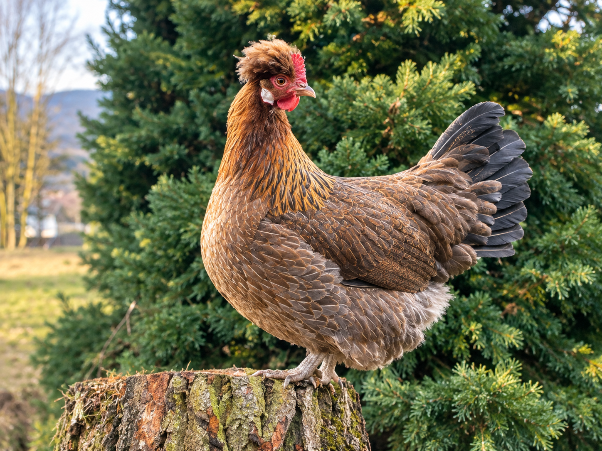

Altsteirer Hühner
Eine traditionelle österreichische Hühnerrasse

Was sind Altsteirer?
Das Altsteirer Huhn ist eine traditionelle österreichische Landhuhnrasse, die ihren Ursprung in der historischen Steiermark hat. Sie zählt heute zu den gefährdeten Nutztierrassen und wird von vielen engagierten Züchtern erhalten.
Die Tiere gelten als robust, widerstandsfähig und gute Futtersucher. Außerdem besitzen viele Altsteirer einen kleinen Schopf, der sie von anderen Rassen unterscheidet.
Herkunft
Die Rasse entstand in der Steiermark und wurde früher auf vielen Bauernhöfen gehalten. Durch moderne Hybridrassen ging die Zahl der Altsteirer jedoch stark zurück.
Heute wird die Rasse im Rahmen verschiedener Erhaltungszuchtprogramme gefördert, um ihre genetische Vielfalt zu bewahren.
Eigenschaften
| Merkmal | Beschreibung |
|---|---|
| Herkunft | Steiermark |
| Nutzung | Zwiehuhn |
| Besonderheit | Schopf und weiße Ohrscheiben |
| Charakter | Lebhaft und aktiv |
Meine Altsteirer
Zu den Altsteirern habe ich eine besondere Verbindung, da sie zu meinen Lieblingsrassen gehören. Besonders gefällt mir ihr Schopf, ihr natürliches Erscheinungsbild und ihr lebhaftes Verhalten.
In meiner Zucht versuche ich die typischen Merkmale der Rasse zu erhalten und gesunde, robuste Tiere aufzuziehen.
MEDT: Flexbox
Flexbox ist ein modernes Layout-System von CSS. Es ermöglicht, Elemente flexibel innerhalb eines Containers anzuordnen. Dadurch lassen sich Webseiten einfacher gestalten und Inhalte übersichtlich ausrichten.
Besonders bei Navigationsleisten, Galerien und Kartenlayouts wird Flexbox häufig verwendet, da sich Elemente automatisch an unterschiedliche Bildschirmgrößen anpassen können.
Flex-Container
Um Flexbox zu verwenden, wird einem Element die Eigenschaft
display: flex; zugewiesen. Dieses Element wird dadurch
zum sogenannten Flex-Container.
.container {
display: flex;
}
Alle direkten Kindelemente des Containers werden nun als Flex-Elemente behandelt und können flexibel angeordnet werden.
Horizontale Anordnung
Standardmäßig werden Flex-Elemente nebeneinander dargestellt. Dadurch können Inhalte platzsparend und übersichtlich angeordnet werden.
.container {
display: flex;
flex-direction: row;
}
Die Eigenschaft flex-direction bestimmt die Richtung
der Anordnung. Mit row werden Elemente horizontal
dargestellt.
Vertikale Anordnung
Mit der Einstellung column werden die Elemente
untereinander angezeigt.
.container {
display: flex;
flex-direction: column;
}
Ausrichtung von Elementen
Flexbox bietet verschiedene Möglichkeiten zur Ausrichtung von Elementen innerhalb eines Containers.
.container {
display: flex;
justify-content: center;
align-items: center;
}
Mit justify-content wird die horizontale Ausrichtung
gesteuert. align-items legt die vertikale Ausrichtung
fest.
Praktisches Flexbox-Beispiel
Das folgende Beispiel zeigt drei Elemente, die mithilfe von Flexbox nebeneinander angeordnet werden.
Mit justify-content wird die horizontale Ausrichtung
gesteuert. align-items legt die vertikale Ausrichtung
fest.
Flexbox auf dieser Webseite
Auch auf dieser Webseite kommt Flexbox zum Einsatz. Die Navigationsleiste verwendet Flexbox-Techniken, um die Menüpunkte übersichtlich auszurichten und auf verschiedenen Geräten korrekt darzustellen.
Dadurch bleibt die Webseite sowohl auf Desktop-Computern als auch auf Smartphones und Tablets benutzerfreundlich
© Atina Rodler 21.04.2026